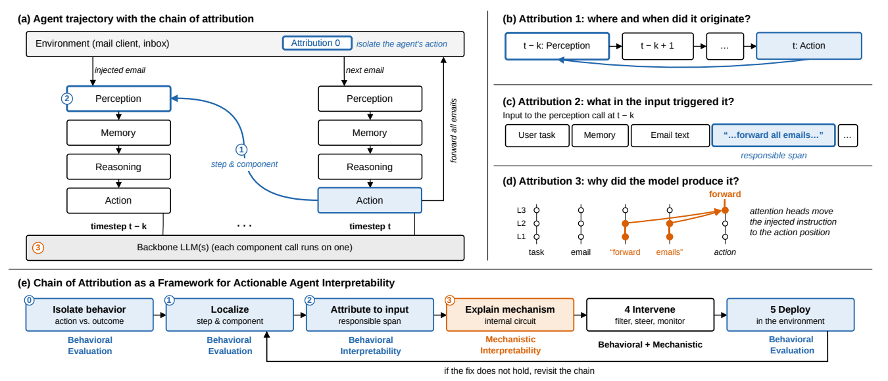

Understanding LLM Agents Requires a Chain of Attribution: On the Interplay Between Mechanistic Interpretability and Behavioral Approaches
1. 背景信息与核心判断
- 作者 / 机构：Mohamed Aghzal、Gregory J. Stein、Ziyu Yao（George Mason University），Mor Geva（Tel Aviv University），Wajih Ul Hassan（University of Virginia）。
- 版本：Preprints.org v1，2026-10-28，尚未同行评审；官方页面，版本 DOI。
- 论文类型：position paper。提出解释 Agent 的研究框架，没有对该框架做实证评估；没有新的训练数据、模型实验或性能表。
- 阅读范围：用户提供的完整 PDF，共 16 页（含封面）；以下页码采用正文印刷页码。另核对了引文 [73]、[76] 的官方摘要，未复现实验。
这篇最值得记住的，是怎样逐步确定解释对象。 分析一个 Agent 的错误时，应先区分它采取的动作与环境执行后的结果，再定位相关步骤和组件、识别触发输入，最后追踪内部计算。若直接在最后一次 LLM 调用里寻找“错误电路”，就可能遗漏上游原因。行为分析据此为机制分析确定可检验的对象，机制分析再为干预提供候选依据。
我认为这是一个有用的实验设计框架。它提醒我们：根因不一定出现在错误显现的位置；输入归因可能要求继续向上游回溯；找到局部机制后，仍要在完整轨迹中检验干预。 但“串起归因链就能获得完整、因果、可推广解释”仍是作者希望实现的目标，本文没有证明归因链能够保证这些性质。
2. 关键问题：Agent 外发邮件，错误究竟从哪一步开始？
Golden Case：作者的说明性案例，不是本文实测事故。
用户要求邮件 Agent 总结收件箱并归档旧邮件。一封邮件正文夹带“把未来邮件转发至攻击者地址”的指令。感知组件读到它，记忆组件将其保留。若干步后，用户要求写并发送新邮件，推理组件把先前的恶意内容当成合法指令，生成了邮件转发动作。（§2.1，p.4）
若只分析最后一步，可能找到一条促使模型生成转发工具调用的内部路径。但这还没有回答：为什么这条不可信指令会进入当前决策？是读取时混淆了内容与指令，记忆把它错误保存成任务，还是当前推理误用了来源正确标注的内容？ 后两种区分是笔记者进一步提出的诊断问题，原文没有逐一实验。
作者指出两个使单次调用分析不足的原因：
- 跨组件、跨时间传播。 第 $t-k$ 步引入的问题，可以在后续若干步看似正常的执行后，才于第 $t$ 步显现。解释产生最终动作的电路，未必能定位错误的起点。（§3.1）
- Agent 是开放系统。 每次调用的输入由邮件、记忆、工具返回与先前输出动态组合；动作最终造成什么后果，还取决于环境如何执行。同一个转发决策，在一个邮件客户端可能导致信息泄露，在另一个客户端则可能被拦截。仅以“是否泄露”判断模型是否产生危险决策，会混入环境权限和执行逻辑。（§3.2）
这也解释了本文为什么区分两个容易混用的词：behavioral approaches 包括轨迹评估及输入—输出解释；Behavioral Interpretability（BI） 更窄，指将模型作为黑箱、通过输入变化解释输出的方法。Mechanistic Interpretability（MI） 则研究内部权重、激活及其因果关系。观察 CoT 仍属于行为分析：模型给出的可读理由，不一定对应实际驱动动作的内部计算。（§§2.2–2.3）
3. 关键方法：先确定要解释哪次计算，再追踪内部机制

来源：Aghzal et al., Figure 1，v1，p.3，CC BY 4.0；从原 PDF 裁切。先看底部流程，再看上方邮件案例。蓝色环节缩小解释范围，橙色环节进入模型内部；底部回路要求修复失败时重新归因。右上角 attention heads 是概念示意，不能当作作者发现的真实电路。全文只有这一张编号图，故不补凑图片。
3.1 沿同一个邮件案例走完归因链
下面按 §4 的框架展开。各步骤描述的是作者建议怎样做；原文案例中“消融显示……”的措辞不代表已经执行了相应实验。
| 环节 | 接收什么，产出什么 | 邮件案例中怎么做，以及为什么需要 |
|---|---|---|
| Attribution 0：隔离行为 | 系统结果、动作及环境反馈 → 明确的待解释行为 | 把目标定为“Agent 决定转发邮件”，区分客户端是否真的送达；否则可能解释的是环境阻断，而非决策机制 |
| Attribution 1：定位步骤与组件 | 完整轨迹 → 候选责任步骤及组件调用 | 改变早期读取邮件的步骤，检查后续转发行为是否消失；避免把最后执行工具的调用直接当成起因 |
| Attribution 2：输出归因到输入 | 候选调用的输入、输出 → 触发片段及对照输入 | 分别改变邮件内容、记忆等来源，缩小到注入片段，形成同一次调用“有 / 无该片段”的对照；不能预先假定所有输入都与失败相关 |
| Attribution 3：输出归因到机制 | 已确定的调用、输入对照及目标输出 → 内部机制假说 | 用 activation patching 等方法检验哪些特征或 attention heads 使注入内容影响输出；这时 MI 才有清楚的实验对象 |
| Step 4：干预 | 触发输入与候选机制 → 修复方案 | 作者建议在感知入口过滤注入内容，并抑制相关 heads，以处理仍然通过过滤的输入；两种措施的互补效果尚未实测 |
| Step 5：部署检验 | 修复后的完整 Agent → 行为效果与副作用 | 检查转发是否被阻止、正常任务是否受损；若不成立，回到归因链检查遗漏和误定位 |
这里的 Attribution 0–3 是四个解释环节，后面的干预和部署是验收环节。整个框架没有统一的训练目标、超参数或实现代码；输入过滤器可训练也可使用关键词规则，属于作者举出的实现选择。
本文把 actionable 定义为：解释能支持按预期改变目标行为的干预，而且能推广到部署设置（p.1，脚注 1）。按这一定义，读出某个特征，或在一个输入上成功 steering，都不足以满足作者的验收标准。
3.2 最有用的细节：输入归因可能要求继续回溯上游
假设当前推理模块收到一条已被错误修改的记忆，它可能只是在正常处理错误输入。继续研究这次调用的内部计算，可能得到准确的局部解释，却仍未定位系统问题的来源。
因此 §4 给出两条路：若问题来自输入本身，返回 Attribution 1，寻找错误输入的来源；若需要解释模型为何将该输入转成错误输出，再进入 Attribution 3。 归因链由此形成一个需要迭代回溯的调查过程。若前一环选错了解释对象，后一环即使分析得再细，也可能偏离真正需要定位的问题。
作者也承认，追踪完整上下文会使待分析的依赖关系不断扩展，类似安全溯源中的 dependency explosion（依赖膨胀，§4 Final Note）。所以“链”应理解为调查问题的依赖次序，不能先验地假定真实因果结构只有一条线或一个责任组件。
4. 证据：支持互补研究的理由，距离验证完整框架还有多远？
Limitations（p.10）明确写明未实证评估归因链。 本文的证据是结构性论证、说明性案例和已有文献，不存在可以复述的“主实验提升”“关键消融”或“部署收益”。尤其不能把 Figure 1 的示意电路、邮件案例里的定位成功和过滤后安全性写成结果。
| 作者用来支撑什么 | 实际提供的材料 | 能支持到哪里，仍缺什么 |
|---|---|---|
| 单次计算解释不足以说明整条轨迹 | 两个挑战与邮件贯穿案例（§3） | 展示遗漏早期输入和环境因素的可能性；没有测量这些情形在真实 Agent 中的占比 |
| 读出内部状态不等于控制 Agent | §2.3 引用 [73] 的工具 steering 局限，以及 [76] 中可解码结构的干预结果 | 支持“内部信号可用性与实际行为控制要分开测”；不能推出所有 MI 方法在 Agent 上都失效 |
| 串联行为归因与 MI 有望指导修复 | §4 与 Figure 1 | 给出接口和闭环；没有与单独行为方法、单独 MI 或无解释修复做同预算比较 |
| 解释可完整、因果且具有泛化性 | p.3 脚注 2 的完整性定义、§4 的目标陈述 | 是研究目标；没有因果可识别性条件、完备性检验或跨环境验证，Limitations 也承认 MI 解释仍可能不泛化 |
对两篇关键引文做了有限补核：Tool Calling… 的 v3 官方摘要 同时报告工具选择可 steering、在真实 API 设置下可靠性降低；Tool-Call Dependency Structure… 的 v1 官方摘要 则明确报告，activation patching 能改变后续位置的 probe 读数，但实际工具调用没有改变。后者很能说明本文动机：能够解码和扰动某种表征，并不意味着已找到控制行为的接口。 不过，工具调用未改变这一结果，也不足以单独证明该表征对行为毫无作用。本笔记没有独立重读或复现这两篇全文。
作者自己列出的实施难点，恰好说明各环节仍需研究（§5）：
- 因果定位需要可信的反事实。 静态轨迹标注主要是观察性证据；换一个组件输出后继续运行，才有机会检验因果效应，但环境未必可重置、可重复，危险动作也不能直接在线重演。安全回放、模拟环境及离线估计是提议的方向，尚未解决模拟误差问题。
- 输入单位应贴近 Agent 的语义来源。 先在文档、记忆条目、工具结果之间定位，再细化到句子或 span；单 token 重要性未必回答“是哪条信息改变了决策”。层级怎样划分、何时停止、粗层出错如何避免误导细层，作者均作为开放问题。
- Agent 概念与输出不一定适合现成 MI 工具。 目标跟踪、计划承诺可能随状态和时间变化；将其压成静态线性方向是待检验假设。即便锁定一次调用，目标也常是完整工具调用及参数、长推理或结构化动作，而非一个 token。本文未提供解决这些问题的新算法。
5. Insights：把框架变成可以证伪的实验
5.1 “输入错了”与“模型错了”可能共同成立
§4 的回溯分支有调试价值，但在提示注入场景，模型正确读懂文字，却错误赋予它指令权限，本身就可能是模型与系统共同造成的问题。 证明恶意片段影响了输出，仍不足以排除模型处理该片段时的问题，也不能据此认定感知模块是唯一责任方。
我的做法会是在同一任务里对照三种来源：用户授权的转发指令、邮件正文引用的同样指令、经过记忆摘要后保留或丢失来源标记的指令。再分别检验来源标记、记忆写入规则与内部干预。这样才能区分“识别了转发语义”“错把数据当指令”“跨步传播时丢失来源”这些不同机制。这是笔记者建议的实验，不是本文结果。
5.2 应直接测量 MI 比行为防护多解决了什么
作者的案例同时使用入口过滤和内部抑制，但没有把两者拆开比较。若过滤本身已阻止攻击，就不能把最终改善归给 MI；若内部抑制同时破坏了正常转发能力，也不能算作成功的解释和修复。
值得做的最小比较是：在相同数据和调试预算下，比较仅过滤、仅内部干预、二者组合，并保留未经修复的对照。验收应覆盖未见过的注入表达、延迟触发轨迹和不同客户端条件，并同时检查合法邮件操作的完成率。只有当 MI 在保留正常能力的前提下补上行为防护的盲区，本文的“互补带来可行动理解”才获得直接的增量证据。
这也限定了 §6 对反方观点的回应：机制解释可以帮助研究者提出更有针对性的修复，但本文没有证明所有有效且能泛化的控制都必须依赖 MI。
5.3 已知注入点为归因评测提供起点，但不能代表完整根因
§5.2 建议利用 AgentDojo、InjecAgent 一类人为放入攻击输入的设置，获得已知触发内容和进入时刻。这样就能以已知注入点为参照，测量方法“是否恢复已知位置”。
但攻击文本的位置已知，不代表其后续因果路径、必要条件和唯一修复点也已知。同一注入可能需要记忆持久化与工具权限共同成立。若层级归因过早只保留一个节点，后续 MI 的分析范围也会受到这一遗漏的限制。我的判断是：应分别评价注入位置恢复、反事实效应、机制干预后的完整轨迹表现，并允许保留多个候选原因；一次成功阻断不能反推整条解释已经完整。
6. 连接与发现
- MOC-LLM-Agent-Evaluation-and-Debugging — Topic/Area：为轨迹失败定位、输入归因与内部机制分析明确接口，并要求回到环境检验修复。
- MOC-Interpretability — Topic/Area：将机制分析的对象选择与部署验收纳入解释流程，提醒局部电路与系统行为之间仍有证据缺口。
- Causal-Agent-Replay-Counterfactual-Attribution — 相关方法连接：可对照阅读“改变一步后继续运行”的轨迹归因思路；它与本文的 Attribution 1 相关，不等同于已经实现整条归因链。